Склад команди
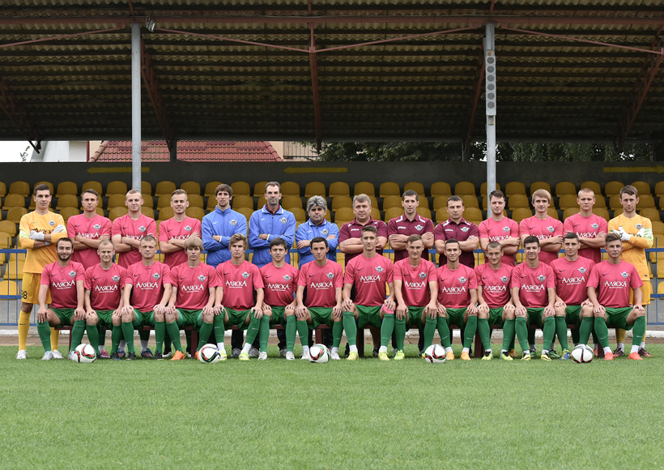| 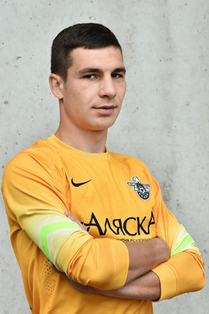 |
Денис Завгородній Воротар Денис Завгородній ази воротарського ремесла здобував у футбольній Академії в Єнакієвому на Донеччині, де займався до 2009 року. У «Скалу» був запрошений в сезоні 2013/2014 років. Проте завоювати місце в рамці воріт йому вдалося не відразу. Спочатку він поступався місцем в основі своєму колезі Роману Данковичу, але на працелюбність на тренуваннях, психологічна стійкість дозволила йому стати голкіпером номер один стрийської команди. |
| 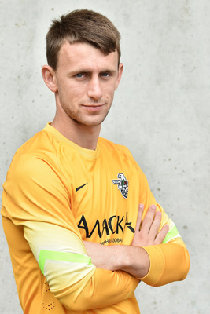 |
Роман Герич Воротар Роман Герич – воротар ФК «Скала». Вихованець Академії футболу «Скала», за який виступав протягом 3 сезонів у чемпіонаті ДЮФЛ України. Після завершення навчання в Академії у 2014 році одразу був запрошений у команду ФК «Скала» U-19, де провів просто блискучий сезон. Його найкращим матчем можна вважати гру проти київського «Динамо», де він неодноразово рятував команду і свої ворота від пропущеного гола чудовими сейвами. |
| 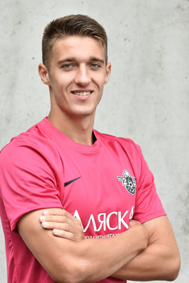 |
Валерій Бондаренко Захисник Валерій Бондаренко – вихованець київського «Арсеналу». За столичний клуб починав виступати ще в першості ДЮФЛ України. Згодом, продовжив захищати кольори «Арсеналу» в командах U-19, а потім і в U-21. До стрийської «Скали» прийшов напочатку 2015 року, після піврічного перебування в кутаїському «Торпедо» і практично одразу завоював місце центрального захисника. |
| 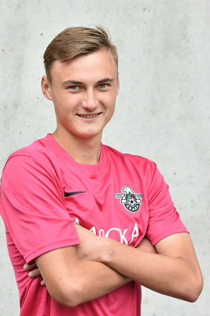 |
Едуард Мись Захисник Едуард Мись – 19-річний центральний захисник, вихованець Академії футболу «Скала», за яку виступав у чемпіонаті ДЮФЛ України, починаючи з 2010 року і до 2013-го. Під час футбольного матчу завжди зосереджений лише на грі, правильно вибирає позицію на полі, часто підключається до стандартних положень, що нерідко призводить до забитих голів у ворота суперника. |
| 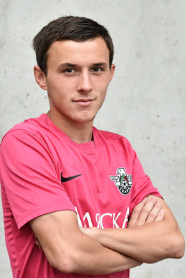 |
Петро Стасюк Захисник
Петро Стасюк – захисник команди «Скала» (Стрий), у футбольній Академії якої навчався протягом 2010-2012 років. Після завершення навчання в Академії одразу був запрошений в основну команду. Незважаючи на юний вік, практично одразу завоював собі місце в стартовому складі на позиції правого захисника.
|
| 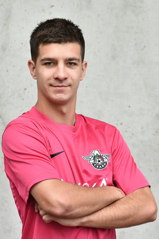 |
Роман Ботвинник Захисник
Роман Ботвинник – лівий крайній півзахисник ФК «Скала» Стрий. Вихованець Львівського училища фізичної культури, де виступав у чемпіонаті ДЮФЛ України до 2010 року включно. Потім був запрошений у команду U-21 львівських «Карпат» (там провів 6 матчів в сезоні 2011/2012 рр.), а після чого – до дублерів ужгородської «Говерли». В міжсезоння 2014 року вдало пройшов оглядини в стрийській «Скалі», де зумів продемонструвати свої найкращі якості. |
| 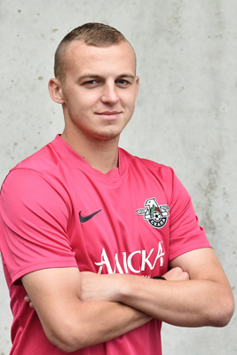 |
Роман Подоляк Захисник Роман Подоляк – вихованець львівського футболу. По закінченні Училища фізичної культури одразу отримав запрошення до львівських «Карпат», за які виступав протягом п’яти сезонів (спочатку за «Карпати-2», а згодом за дубль). Проте потрапити в основну команду «Карпат» гравцю не вдалося, хоча й проводив збори та виступав у контрольних поєдинках. Після цього був короткий період виступів у чернівецькій «Буковині», звідки й отримав запрошення до ФК «Скала». |
| 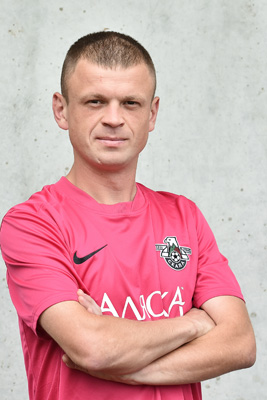 |
Тарас Максимович Захисник Тараса Максимовича можна вважати самородком в українському футболі. Адже професіональну футбольну кар’єру він розпочав у віці 25 років саме у ФК «Скала» Стрий. Нині Тарас є одним із найстарших гравців команди, хоча йому тільки 26 років. Він є гравцем руйнівного плану і вважається універсалом, адже може закрити будь яку позицію як в захисті команди, так і на позиції опорного півзахисника. |
| 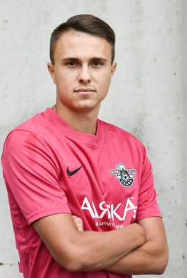 |
Юрій Антонів Захисник Юрій Антонів – вихованець Академії футболу «Скала», за яку виступав, починаючи з 2006 року. Вже тоді виділявся своїми лідерськими та ігровими якостями і тому не випадково, пройшовши всі щаблі Академії, був запрошений в головну команду. Тренерський склад довіряв молодому захиснику і часто випускав на поле для здобуття досвіду. В 2011 році Юрій пробував свої сили в команді «Шахтар-3» Донецьк, але вже за рік повернувся в рідну команду «Скала», де став гравцем основи. |
| 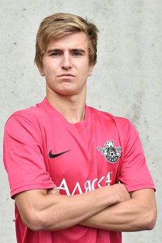 |
Андрій Маляренко Півзахисник Андрій Маляренко – розпочинав своє знайомство з футболом у вінницькій ДЮСШ «Нива», де займався до 2008 року. Після створення «Скали» U-19, зважаючи на вік, був переведений до юніорської команди, де був одним із лідерів команди. Якщо говорити про ігрові якості Андрія, слід звернути увагу на добре володіння м’ячем, його хист виконувати стандартні положення, універсальність, що дозволяє відіграти на будь якій позиції в півзахисті команди. |
| 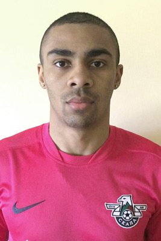 |
Білала Роланд Півзахисник
Білала Роланд Расель Еменович – нападник.
|
| 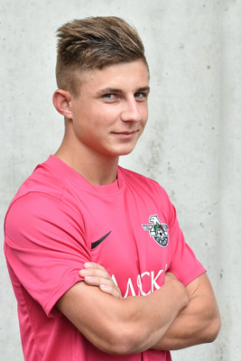 |
Богдан Іванченко Півзахисник Богдан Іванченко – молодий 19-річний крайній півзахисник ФК «Скала», який пройшов футбольну школу «BRW-ВІК» з Володимира Волинського, де протягом 2009-2013 років виступав у чемпіонаті ДЮФЛ України. На полі гравець вирізняється своїм футбольним характером, віртуозною технікою, вмінням загострити ситуацію, вибуховістю. Може зіграти на будь якому фланзі, залежно від настанов тренера, а також має потужний удар з лівої ноги. |
| 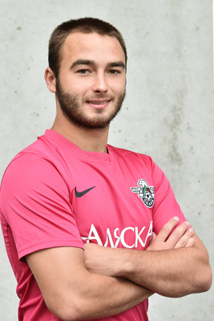 |
Віталій Рябушко Півзахисник Віталій Рябушко – півзахисник, який може вдало зіграти як на позиції крайнього атакувального півзахисника так і під нападником, приєднався до «Скали» на початку 2015 року, і за такий короткий термін встиг стати одним із лідерів команди, її найкращим бомбардиром. На полі вирізняється своєю технікою, вибуховим спалахом в атаці та потужним дальним ударом з лівою ноги, оскільки є шульгою. Відзначимо також його вміння обирати вдалу позицію в завершальній фазі атаки. |
| 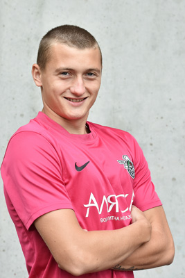 |
Владислав Клименко Півзахисник Владислав Клименко – типовий опорний півзахисник. Футбольну кар’єру розпочинав в одеській ДЮСШ-11, де займався до 2011 року. Потім запрошений в «Реал Фарму», звідки й перебрався до «Скали» у 2014 році. Пробував свої сили й у криворізькому «Кривбасі», де у сезоні 2012/2013 років провів за дубль 12 матчів. З приходом Клименка до стрийської команди «Скала» почала менше пропускати, оскільки його основною метою перебування на полі є переривання атак суперника. |
| 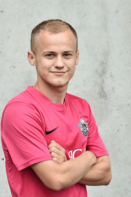 |
Володимир Пришнівський Півзахисник Володимир Пришнівський був запрошений у «Скалу» після осінньої частини сезону 2010/2011 років, яку він провів у тернопільській «Ниві». Селекціонерам «Скали» Пришнівський запам`ятався ще виступаючи в ДЮФЛ України за «BRW-ВІК» з Володимира-Волинського, вирізняючись своїми нестандартними діями, футбольним інтелектом. Саме через це він запрошувався і до юнацької збірної України. |
| 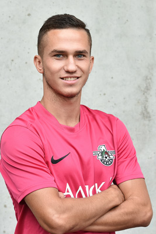 |
Дмитро Скакун Півзахисник Дмитро Скакун був запрошений у «Скалу» влітку 2013 року. Гравець має дуже хороший футбольний вишкіл, адже навчався і виступав у школі київського «Динамо». За столичний клуб протягом 2006-2010 років у чемпіонаті ДЮФЛ України провів 78 матчів і забив 26 голів. Після навчання в Академії ФК «Динамо» виступав спочатку у першості дублерів за «Динамо», а потім у молодіжній першості і за дублерів київського «Арсенала». |
| 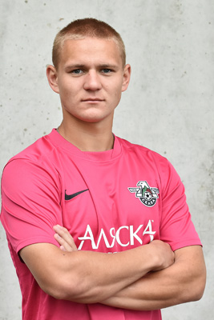 |
Михайло Березовий Півзахисник Михайло Березовий – вихованець футболу Київщини. До 2007 року займався у КОК ДЮСШ «Гарт-Рось» у м. Ірпені. Потім продовжив навчання у Республіканському Вищому Училищі Фізичної Культури в Києві, за який виступав у чемпіонаті ДЮФЛ України протягом 2008-2011 років. Після закінчення столичного РВУФК отримав запрошення від львівських «Карпат», де виступав за дубль до 2014 року. У 2014 році продовжив кар’єру у ФК «Скала». |
| 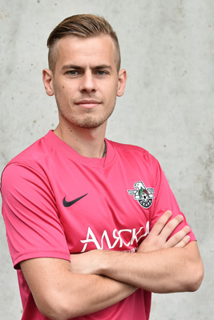 |
Назар Кміть Півзахисник Назар Кміть – півзахисник, вихованець Академії футболу «Скала», за яку виступав у чемпіонаті ДЮФЛ України, починаючи з 2005 року. В 2007-2009 роках навчався в клубній Академії англійського футбольного клубу «Болтон». В 2011 році запрошувався до лав юнацької національної збірної U-18, за яку провів 2 гри проти збірної Чорногорії. Пройшовши всі щаблі клубної «ієрархії», нині є не лише старожилом стрийської команди, а й гравцем, від якого багато в чому залежить гра «Скали» в центрі поля. |
| 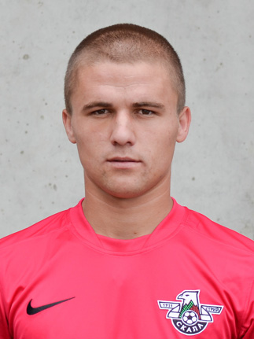 |
Василь Цюцюра Нападник Василь Цюцюра у «Скалі» з 2012 року, куди був запрошений після виступів у чемпіонаті ДЮФЛ України, граючи за івано-франківське «Прикарпаття». Гравець помітно прогресує з кожним сезоном і не випадково на це звернули увагу наставники дніпродзержинської «Сталі» і взяли гравця, починаючи з літа 2015 року, в піврічну оренду. Василь Цюцюра може грати як на позиції центрального нападника, так і фланговим атакувальним півзахисником, адже володіє високою швидкістю. |
| 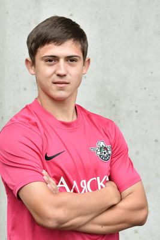 |
Олег Квич Нападник Олег Квич є вихованцем Академії футболу «Скала», яку закінчив 2013 року. Ще виступаючи в чемпіонаті ДЮФЛ України відзначався бомбардирським хистом. У фінальній частині команд U-17 став найкращим бомбардиром, провівши у 4 матчах 7 голів. На це звернули увагу тренери юнацької збірної України, тому в 2013-2015 роках Квич провів за національну команду 14 поєдинків, де відзначився 3 забитими голами. |
| 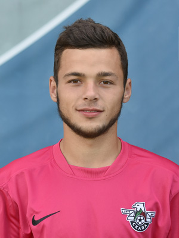 |
Сергій Мельник Нападник Сергій Мельник – молодий 17-річний універсальний гравець атакувального плану ФК «Скала», який розпочинав знайомство з футболом у рідному Кам`янець-Подільському, де протягом 2007-2011 років виступав за місцеву ДЮСШ-2. На полі гравець вирізняється віртуозною технікою, швидкістю, вмінням загострити ситуацію, вибуховістю. Може зіграти на будь якому фланзі нападу, залежно від настанов тренера, а також на вістрі атаки. |